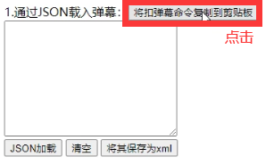
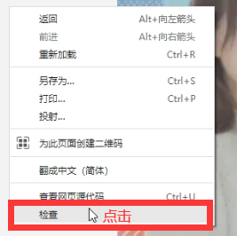
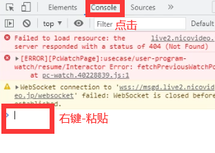
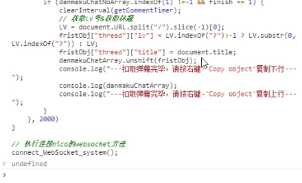
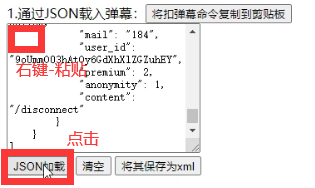
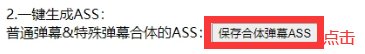

1.使用CHROME等主流浏览器打开nico-danmaku2ass.html，点击“将扣弹幕命令复制到剪贴板”按钮。

2.随便进入一个NICO生放送LV页面，在页面内“右键-检查”。

3.弹出的窗口点击“Console”，在光标处“右键-粘贴-回车”后等待（报错属网络丢包不用管）。

4.等出“取弹幕完毕，请按右键-'Copy object'复制下行”句子，如实操作复制下行的数组。

5.将数组复制回“nico-xml转ass页面”的文本框内，点击“JSON加载”按钮。

6.点击“保存合体弹幕ASS”按钮。
